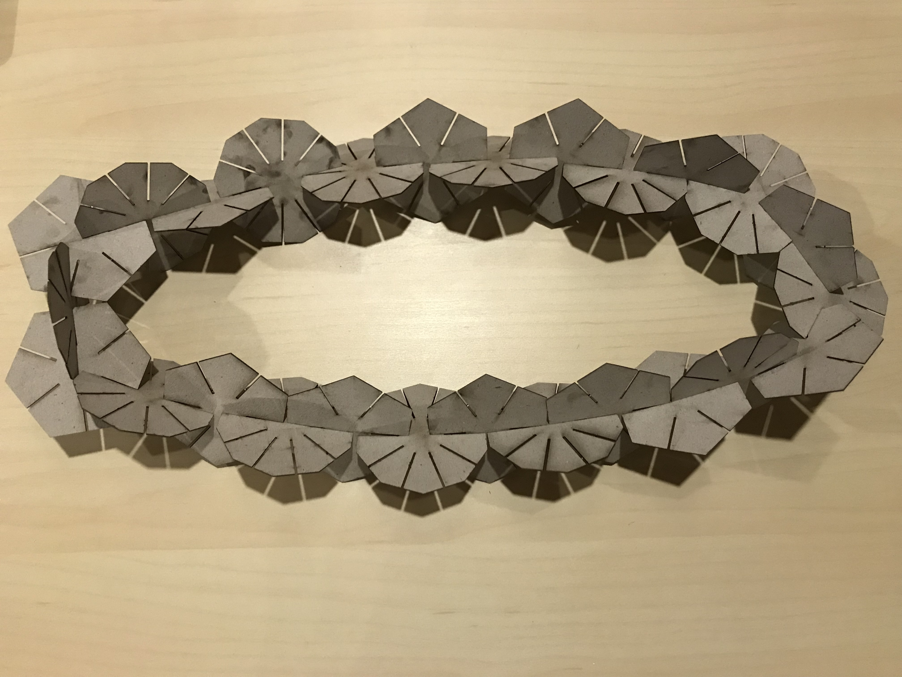
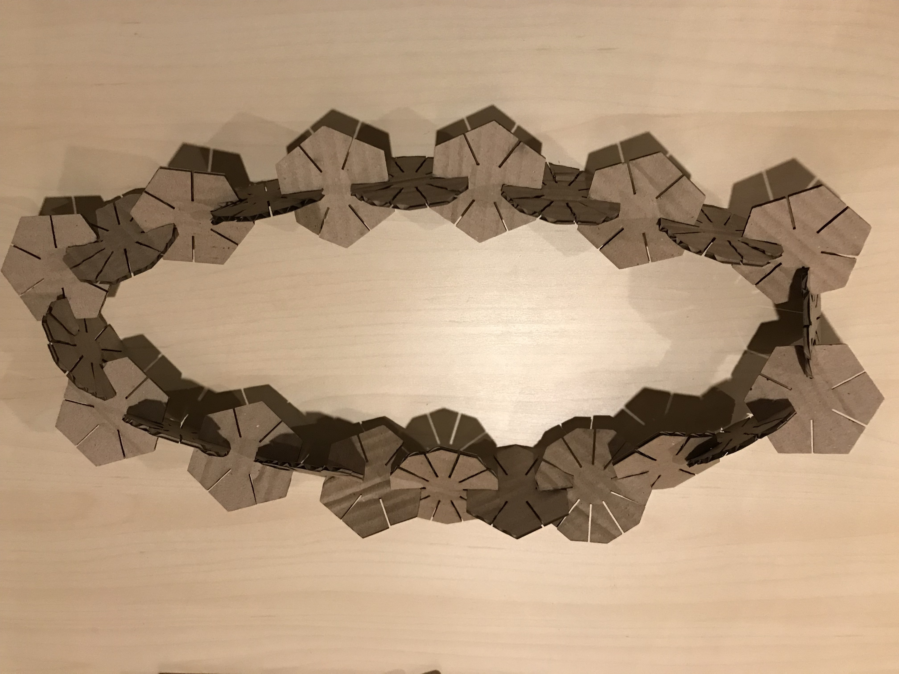
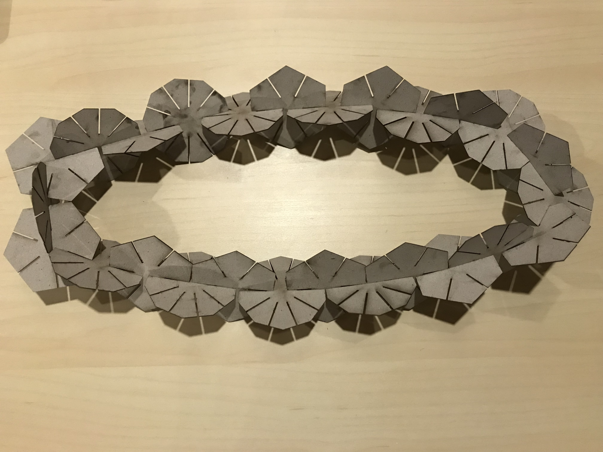
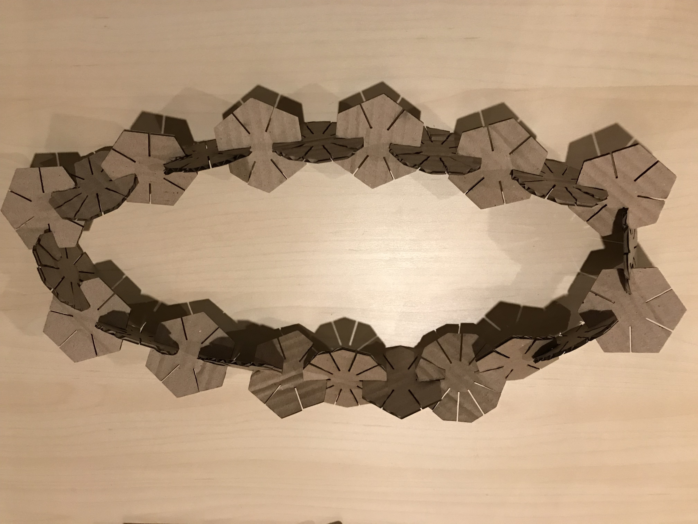
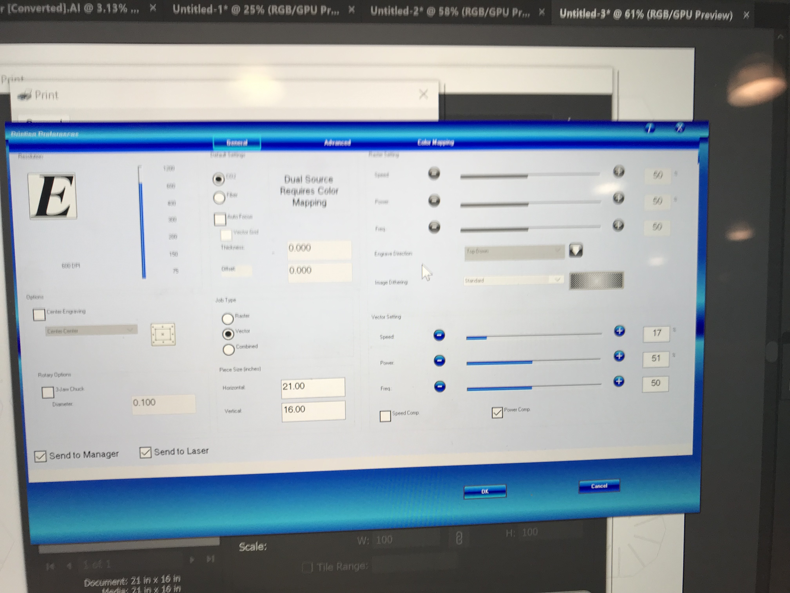

Huan's new laser cut project!
 



Ideation
I was inspired by some of my classmates' models where they used simple shapes to create a variety of models. I also wanted the enjoy the freedom of getting insprired in the process of making, so this time I decided to just use simple geometric shapes. I chose hexagons and decagons as they look like flowers and could form element models.
Trials and Errors
Then I started to use Rhino and Grasshopper to create the shapes. It is a fun learning process, following Nadya's wonderful tutorial. Some mistakes I made during the process include forgetting to take into consideration the paper size, and forgetting to save the documents. However, I am grateful for the mistakes as they made me practice setting the parameters and using the software. It was through such trial and error that I got more and more efficient in using the tool.
Finally, based on the different thickness of my files, I set the gaps of my vector shapes to 0.153 and 0.037 respectively.

Execution
I was more proficient in using the laser cutting machine this time :). Since the thickness of the two cardboards are different, I set the laser cutter different. For the thinner cardboard, my settings are: Speed:17 Power: 51 Frequency: 50

For the thicker cardboard, my settings are: Speed:25 Power: 100 Frequency: 50
Then the laser cutter did its job!


Demonstration
My husband and I played around with the shapes I cut. Indeed, the combination of hexagons and decagons work very well and they created elegant shapes. My husband made a drone, and I made models of the Bird Nest (the Beijing Olympics Stadium).
Thanks Joshua for answering my questions at the Mill! Thanks Nadya for providing the tutorial.